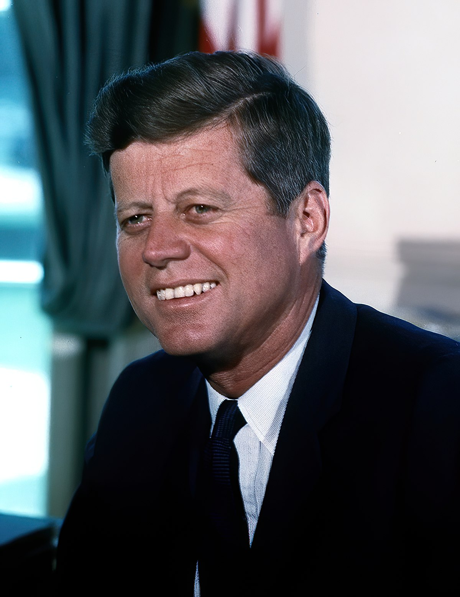

Winston Leopard Spencer Churchill 1874-ben, a woodstocki Blenheim kastélyban született, arisztokrata családba. Már korán megmutatkozott lázadó, független személyisége. 1893-ban végezte el a Harrow-t, majd harmadik kísérletre bejutott a Királyi Katonai Főiskolára. 1895-ben hadnagy, 1941-ben pedig huszárezredes lett. Haditudósítóként dolgozott, 1895-ben Kubába vezényelték, hogy megfigyelje a spanyolok és a gerillák küzdelmét. Ezt követően 1897-ben Malakandba ment, a mai Pakisztán területére, ahol tűzharcokba is keveredett. 1898-ban Szudánba vezényelték, ahol 2 későbbi I. világháborús parancsnokkal is találkozott. Az ezt követő évben indult először a brit választásokon, konzervatív jelöltként, és végül harmadik helyet ért el. 1899-ben Dél-Afrikába ment, hogy a második búr háborúról tudósítson. Itt hadifogságba került, ahonnan sikeresen kimenekült, így kisebb nemzeti hőssé vált Angliában.
1900-ban ismét megkísérelte a Képviselőházba való bejutást, ez alkalommal sikeresebb volt a választásokon. A Parlamentben a konzervatívokhoz csatlakozott. Kiállt a szabad kereskedelem mellett, mely miatt szembe került a konzervatív párt egy részével, választókerülete (Oldham) megvonta tőle a támogatást. 1904-re akkor lett az ellentét, hogy Churchill új pártot alapított és átült a liberálisok soraiba. 1906-ben Északnyugat-Manchesterben szerzett mandátumot.
Szépen lassan Churchill vált a kormányzat legprominensebb tagjává, így 1908-ban kereskedelmi miniszterré emelték. Ebben az évben Dundeeban szerzett mandátumot. Jóléti reformokat vezetett be (1909, "nép költségvetése"), csonkították a Lordok Háza jogkörét. 1910-ben lett belügyminiszter, amely pozícióban meglehetősen vegyes értékelésű teljesítményt nyújtott.
1911-ben Churchillt kinevezték az admirális első lordjává, amely tisztségez az I. világháborúban is betöltötte. Támogatta a tengeri és a légierő fejlesztését, valamint a tankok kifejlesztését. Churchill egyike volt az 1915-ös gallipoli partraszállás tervezőinek, amely azonban hatalmas kudarcba fulladt, így főként őt tették felelőssé, mely azt eredményezte, hogy le kellett mondania. Kéépviselőként tért vissza a hadsereghez, ahol a nyugati fronton kapott zászlóaljvezetési feladatokat. Amikor 1916-ban David Lloyd George, Churchill régi barátja került kormányra, 1917-ben hadfelszerelési miniszterré nevezték ki. Fő elfoglaltsága a szövetséges intervenció volt az orosz polgárháborúban. Ő ismerte fel először, hogy a bolsevizmust minél hamarabb meg kell állítani. Ezt követően 1921-ben támogatta az Ukrajnát lerohanó lengyel hadsereget.
1923-ban, a választásokon vesztett Leicesterben, majd elkezdett közeledni a konzervatívokhoz. 1924-ben már függetlenként indult, és Epping körzetével ismét bejutott a Képviselőházba, ahol csatlakozott a Konzervatív Párthoz és pénzügyminiszter lett. Felügyelte Nagy-Britannia visszatérését az aranyalaphoz, mely sztrájkokat, deflációt és munkanélküliséget okozott. Churchill géppuskát javasolt a sztrájkok leverésére.
Miután 1929-ben megbukott a konzervatív kormány a gazdasági világválság hatására, legközelebb már csak a II. világháború ideje alatt töltött be fontos szerepet. Ellenezte Chamberlain gyengekezűségét, szigorúbb fellépést javasolt Németországgal szemben. 1939 szeptember 1.-én Hitler lerohanta Lengyelországot, Nagy-Britannia pedig hadüzenetet küldött Németországnak. Nyugaton "furcsa háború" alakult ki: A felek papíron hadban álltak, de nem akartak harcolni egymással. Hitler ezt kihasználva rohanta le Dániát és Norvégiát. Az események hatására Chamberlain lemondott, és Churchill lett Nagy-Britannia miniszterelnöke.
Miniszterelnöksége azonban katasztrófával indult. Hitler ugyanis 1940 május 10-én lerohanta a Benelux államokat, rá néhány hétre pedig elesett Franciaország is. Nagy-Britannia egyedül maradt, de Churchill hajthatatlan volt, elutasította a kapitulációt. Vezette seregét az angliai csatában, Egyiptomban El-Alemeinnél, igyekezett közel kerülni az Egyesült Államokhoz. Amerika azonban csak Pearl Harbor után csatlakozott a háborúhoz, amikor már a Szovjetunió is szövetséges volt. Bár Churchill nem szerette Sztálint, Hitlerrel szemben hajlandó volt támogatni a szovjeteket. Churchill részt vett a II. világháború rendezésére szolgáló potsdami és jaltai konferenciákon is.
A háború végét követően 1945-ben vereséget szenvedett a Clement Attlee által vezetett Munkáspárt ellen, de 1951-ben visszatért a miniszterelnökségbe, mely 1955-ig tartott. Ezen időszak két legnevezetesesbb eseménye a Mau Mau felkelés és a malajziai válság. 1953-ban kapott agyvérzést, melyet a nyilvánosság elől eltitkoltak, végül 1965-ben halt meg, Londonban.
Franklin D. Roosevelt (1882 - 1945)
Franklin D. Roosevelt
Egyesült Államok
Tisztség: Elnök
Franklin Delano Roosevelt, az USA 32. elnöke 1882-ben született, New Yorkban, gazdag nagyvállalkozó család gyermekeként. Fiatalkorában már tanulmányaival bebizonyította, hogy kiemelkedő egyéniség. A Harvardon és a Columbia Egyetemen folytatott tanulmányai után 1905-ben ügyvédi irodát nyitott, de a politika jobban érdekelte. 1910-ben a Demokrata Párt jelöltjeként New York állam szenátorává választották. 1913-ban kinevezték a haditengerészeti miniszter helyettesévé. 1920-ban nem sikerült az alelnökjelöltséget megszereznie. 1921-ben súlyosan megbetegedett, a fertőző gyermekbénulás következtében gyakorlatilag tolókocsiba kényszerült, de nem mondott le a politikai karrierről. New York állam kormányzójaként (1929–1933) számos reformot vezetett be: megkönnyítette a hitelfelvételt, munkanélkülisegély-szervezetet hozott létre, bevezette a nők és gyermekek számára a 48 órás munkahetet.
Intézkedései nyomán nagyon fontos megemlíteni a világgazdasági válság sikeres kezelését. Ez egy olyan esemény volt a történelemben, mely számos ország gazdaságát megingatta, és nagyon kevés állam tudott kilábalni belőle. Az Egyesült Államoknak azonban sikerült. Mellettük csupán a hitleri Németország tudott felülkerekedni a válságon, azonban számukra ez a demokrácia elvesztésével járt.
1932-ben a New Deal ( „új irányvonal”) programjával legyőzte Herbert Hoover hivatalban lévő elnököt az elnökválasztásokon. A New Deal (1933–1939) segítségével az Egyesült Államok sikeresen kilábalt a hatalmas túltermelési, pénzügyi és agrárválságból, és visszaszorította az óriási munkanélküliséget. Roosevelt új hivatalokat és testületeket hozott létre, ezek segítségével eredményesen befolyásolta a gazdasági folyamatokat. Hatalmas közmunkákat indított el, termeléscsökkentésre bírta a farmereket, segítséget nyújtott az esetleges áttelepüléseknél, eltörölte a szesztilalmat, segélyt kaptak a bankok, és új társadalombiztosítási törvényt fogadtatott el.
Bár a háború első napján bejelentette, hogy országa semleges marad, novemberben a semlegességi törvény módosításával elérte, hogy Nagy-Britannia és Franciaország cash and carry ( „fizesd és vidd”) alapon fegyvereket vásárolhasson. 1940-ben új sorozási törvényt terjesztett elő, valamint megindította a tengeri és a légiflotta fejlesztését. 1941. márciusban a kölcsönbérleti törvény elfogadtatásával lehetővé tette, hogy az Egyesült Államok a tengelyhatalmak ellenfeleit készpénzfizetés nélkül, kölcsönösségi alapon, illetve bérlet formájában ellássa a háborúhoz szükséges legfontosabb eszközökkel (fegyver, repülőgép, hajó, gépjármű, élelmiszer, gyógyszer, nyersanyag). 1941. augusztus 14-én Winston Churchill brit miniszterelnökkel együtt aláírták az Atlanti Chartát, amely elítélt mindennemű új hódítást, s kilátásba helyezte egy nemzetközi szervezet létrehozását a háború után. Japán hadüzenet nélküli Pearl Harbor-i támadása (1941. december 7.) után az USA is hadviselő féllé vált. Az elnök legfőbb célja az volt, hogy a háborúnak a legkevesebb véráldozattal a lehető leggyorsabban vége legyen; személyesen is meghatározó szerepe volt a győzelem kivívásában. Rossz egészségi állapota ellenére részt vett azokon a konferenciákon, amelyeket az antifasiszta szövetséges hatalmak a katonai tervezés és a diplomáciai rendezés céljával hívtak össze (1943-ban Casablanca, Québec, Kairó, Teherán; 1945-ben Jalta). Az európai győzelem előtt néhány héttel, a Georgia állambeli Warm Springsben agyvérzésben halt meg.
Érdemes megemlíteni Rooseveltről azt is továbbá, hogy zsinórban négyszeres újraválasztása miatt alkotmánymódosításra volt szükség az Egyesült Államokban. Halála után az amerikai elnök legfeljebb két hivatali időszakot tölthet be, tehát összesen nyolc évet.
John F. Kennedy (1917 - 1963)

John F. Kennedy
Egyesült Államok
Tisztség: Elnök
John Fitzgerald Kennedy, az USA 35. elnöke 1917-ben látta meg a napvilágot, a massachusettsi Brookline városában. Az USA történetének az első római katolikus elnökéről beszélünk. Ír származású családba született, apja kongresszusi küldött volt, így fiát is politikai pályára akarta állítani. Ezért Kennedy a Harvard egyetemen kezdte meg tanulmányait, ahol le is diplomázott.
Miután az Egyesült Államok belépett a második világháborúba (1941. december 7.) Kennedy századosként szolgált a haditengerészet kötelékében a Csendes-óceánon, ahol hősiességéért kitüntetésben is részesült. A harcok során azonban súlyos gerincsérülést szenvedett, amit több műtét sem tudott orvosolni, ezért arra kényszerült, hogy fájdalomcsillapítók, altatók és izomlazítók kombinációján éljen egész életében. A politikus a háború után 1947-től tagja lett a washingtoni képviselőháznak, majd 1953-ban bekerült a szenátusba. Ebben az esztendőben kötött házasságot Jacqueline Bouvier-val is, akitől később három gyermeke született.
1960-ban Kennedy elindult az amerikai elnökválasztáson, és végül apja támogatásának is köszönhetően, egy rendkívül szoros küzdelemben (0,2%) legyőzte a republikánus jelöltet, Richard Nixont, mellyel az Egyesült Államok legfiatalabb megválasztott elnökévé vált. Sikerének oka a modern tömegtájékoztató eszközökre való építés volt. Kennedy sikeresen kampányolt a rádióban és a televízió képernyőin keresztül is egyaránt.
Az amerikai történelem első katolikus elnöke kezdetben gyenge vezető benyomását keltette a Szovjetunióban, amit az 1961. áprilisi sikertelen kubai partraszállás – a disznó-öbölbeli incidens – is megerősített. Hruscsov ezt látva kockáztatta meg 1961. augusztus 13-án éjjel a berlini fal felhúzását, és hasonló okból fogott nagy hatótávolságú szovjet rakéták telepítésébe Kubában, ami 1962-re a harmadik világháború szélére sodorta a világot. Kennedy azonban jó taktikusnak bizonyult, mert Bécsben folytatott tárgyalásai során elérte, hogy Hruscsov visszavonja arzenálját a szigetországból, ráadásul úgy, hogy az alku rá eső részét sem kellett teljesítenie, az ő rakétái ugyanis megmaradhattak a NATO-tag Törökországban.
Bár buzgó antikommunista volt, Kennedy belátta, hogy fegyveres úton nem lehet megoldani a szovjet ideológia jelentette problémát, ehelyett békés eszközökkel érdemes felülkerekedni – igaz, elnöksége idején fokozta az amerikai katonai jelenlétet Dél-Vietnamban. A Kennedy-féle antikommunista recept az 1961-ben létrehozott Békehadtest volt: ez a szervezet azért jött létre, hogy a dél-amerikai államokat távol tartsa volt a szovjet blokktól, amit az elnök Latin-Amerikába juttatott segélyek, és rendszere exportálásával képzelte el. A szovjet-amerikai rivalizálás része volt az 1961 májusában meghirdetett Apollo-űrprogram is, melynek meghirdetésekor Kennedy ígéretet tett arra, hogy országa még az évtized végéig embert küld a Holdra.
Az elnök antikommunizmusa a belpolitikában liberalizmussal párosult. Fellépett a fekete bőrű lakosság jogainak érvényesítése érdekében, és katonai erőt is képes volt alkalmazni a rasszista zavargások megszüntetésére. Kennedy nevéhez fűződött egy nagyívű szociális program is, melynek keretében az oktatást, a tudományos kutatásokat, az egészségügyet, és a szegénység elleni küzdelmet támogatta. Miután öccsét, Robert Kennedyt nevezte ki legfőbb ügyésznek, az elnök háborút indított az országot behálózó maffia és a szervezett bűnözés felszámolása érdekében is – sokak szerint később ez okozta halálát.
Kennedy jelöltetni akarta magát a következő elnökválasztáson is, ezért 1963. november 22-én, már egy előkampány részeként, Dallasba utazott, hogy rendet tegyen a helyi frakcióban. Ez volt az a végzetes látogatás, mely során Lee Harvey Oswald, a helyi tankönyvraktár egyik dolgozója halálos merényletet követett el ellene. Oswald három lövést adott le az Elm Streeten haladó elnöki konvojra, ebből kettő golyó találta el Kennedyt, egy a nyakán, egy pedig a fején sebesítette meg. A politikus már a helyszínen életét vesztette.
A híres merénylet mind a mai napig foglalkoztatja az Egyesült Államok és a világ közvéleményét, miközben jó lehetőséget nyújt arra, hogy az összeesküvés-elméletek kedvelői próbára tegyék fantáziájukat. Lehetséges merénylőként – örök klasszikusként – felmerült a KGB neve, de sokan gondoltak a maffia bosszújára, vagy az átszervezés alatt álló CIA, esetleg a hatalmat megöröklő Lyndon B. Johnson bűnrészességére. Az összeesküvés gyanúját látszólag erősíti, hogy Oswaldot két nappal később meggyilkolta egy dallasi bártulajdonos, Jack Ruby, így örök kérdés marad, hogy a merénylő vajon egyedül, vagy megrendelésre cselekedett. Kennedy halála után egy parlamenti vizsgálóbizottság is összeült, mely a Warren-jelentésben összegzett nyomozás során nem talált bizonyítékot arra, hogy politikai gyilkosság történt.